Introduction: Thyroid scintigraphy is a crucial imaging technique used for assessing thyroid abnormalities; nevertheless, automatic analysis of these images poses difficulties because of the heterogeneous nature of diseases, overlap between different scintigraphy images, and the absence of large annotated databases. While deep learning (DL) techniques have proven successful in the field of medical imaging, the presented performances were achieved under idealized conditions. In this work, DL approaches to thyroid scintigraphy classification were studied under difficult multi-center conditions, and whether more complex image representations or network architectures would improve performance was investigated.
Methods: Images from 2,448 cases of [99mTc]Tc‑pertechnetate thyroid scintigraphy scans were acquired from five nuclear medicine centers. Images were annotated to four diagnostic classes: normal, thyroiditis, tumoral, and diffuse goiter. Three DL experiments were compared with identical stratified five-fold cross-validation: (1) baseline single-channel CNN architectures, (2) a three-channel representation including grayscale, Fourier transform magnitude, and Sobel edge channels, and (3) a mixture-of-experts (MoE) system that includes class-specific expert networks. Predictions from the models were visualized using Grad-CAM. Also, a binary classification analysis was conducted on tumoral and non-tumoral cases.
Results: DenseNet121 performed the best on the baseline task, with an accuracy of 0.655±0.032 and a macro-ROC-AUC of 0.836±0.034 for the four-class classification task. Neither frequency- nor gradient-representation augmentations nor MoE helped to achieve consistent improvement, which indicates that additional models or input complexity does not lead to better generalization. Grad-CAMs showed that the predictions were based mostly on thyroid uptake areas. For the two-class problem, DenseNet121 obtained better discrimination with an accuracy of 0.773±0.011 and ROC-AUC of 0.848.
Conclusion: The performance of DL algorithms in thyroid scintigraphy is highly dependent on dataset complexity, diagnosis overlap, and data annotation level. These results demonstrate the need for realistic clinical benchmarks and explainable AI in nuclear medicine. The dataset, trained models, and code are publicly available for future development.
A dataset of 2,448 planar [99mTc]Tc‑pertechnetate thyroid scintigraphy images was retrospectively collected from five nuclear medicine centers (1,084 / 174 / 93 / 619 / 478 images respectively) and consolidated into four diagnostic classes — Normal (341), Thyroiditis (466), Tumoral (924), and Diffuse Goiter (717) — from eight original clinical categories. Images were denoised with SwinIR, deblurred with NAFNet, contrast-enhanced with CLAHE, and standardized to 128×128 pixels. All three frameworks below were evaluated under an identical stratified five-fold cross-validation protocol (fixed seed, ~80/20 train/validation split per fold) so that differences in performance reflect architecture and representation choices rather than data partitioning.
Five established architectures — VGG11, MobileNetV2, ResNet18, EfficientNetB0, DenseNet121 — trained from scratch on the raw grayscale image, with cosine-annealed learning rate over 100 epochs/fold.
The grayscale image is stacked with a log-scaled FFT-magnitude channel and a Sobel gradient-magnitude channel, then fed to deeper DenseNet161 / ResNet152 backbones with oversampling for class balance.
Four lightweight one-vs-rest expert CNNs, one per diagnostic class, are trained independently; their frozen positive-class logits are concatenated and fed to a small trainable fusion network for the final four-class decision.
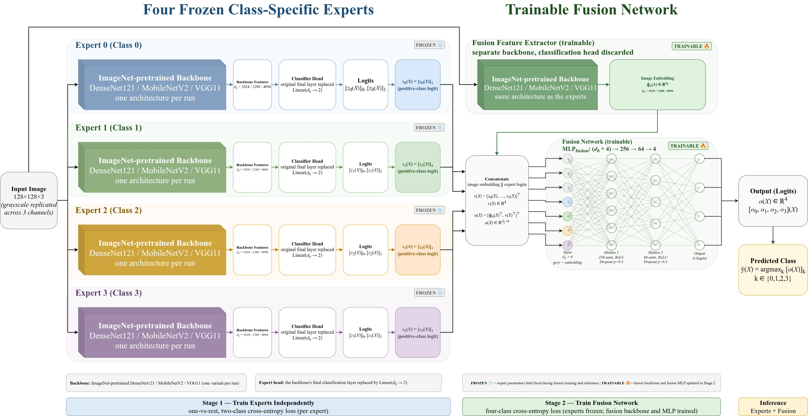
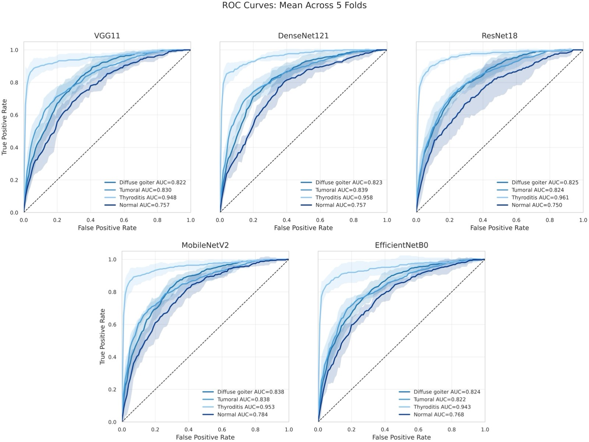
Across all three frameworks, added representational or architectural complexity did not translate into consistent gains — the single-channel DenseNet121 baseline remained the strongest overall model.
DenseNet121 achieved the strongest and most consistent baseline performance across all reported metrics.
| Model | Accuracy | Macro Precision | Macro Recall | Macro F1 | Macro ROC-AUC |
|---|---|---|---|---|---|
| VGG11 | 0.585 ± 0.136 | 0.526 ± 0.298 | 0.515 ± 0.184 | 0.492 ± 0.244 | 0.773 ± 0.145 |
| MobileNetV2 | 0.631 ± 0.023 | 0.614 ± 0.034 | 0.591 ± 0.039 | 0.592 ± 0.038 | 0.810 ± 0.223 |
| ResNet18 | 0.637 ± 0.028 | 0.615 ± 0.033 | 0.601 ± 0.037 | 0.597 ± 0.039 | 0.811 ± 0.186 |
| EfficientNetB0 | 0.640 ± 0.019 | 0.645 ± 0.051 | 0.582 ± 0.016 | 0.581 ± 0.023 | 0.824 ± 0.078 |
| DenseNet121 | 0.655 ± 0.032 | 0.651 ± 0.038 | 0.613 ± 0.046 | 0.615 ± 0.050 | 0.836 ± 0.034 |
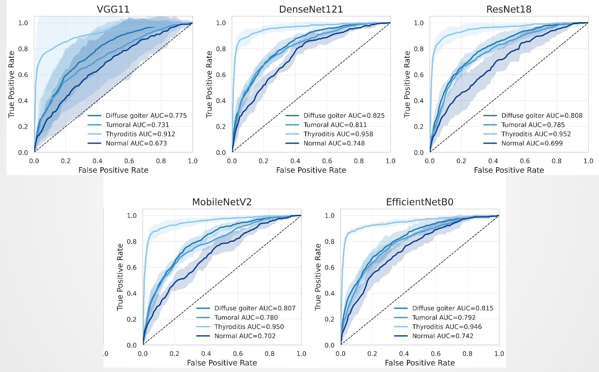
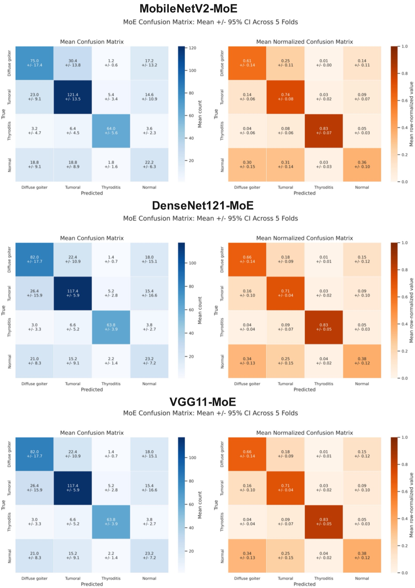
Adding FFT-magnitude and Sobel-gradient channels and moving to deeper backbones (DenseNet161, ResNet152) did not surpass the single-channel DenseNet121 baseline.
| Model | Accuracy | Weighted Precision | Weighted Recall | Weighted F1 | Macro ROC-AUC |
|---|---|---|---|---|---|
| ResNet152 | 0.617 ± 0.018 | 0.603 ± 0.020 | 0.617 ± 0.018 | 0.596 ± 0.022 | 0.801 ± 0.121 |
| DenseNet161 | 0.639 ± 0.026 | 0.634 ± 0.030 | 0.639 ± 0.026 | 0.622 ± 0.035 | 0.80 ± 0.034 |
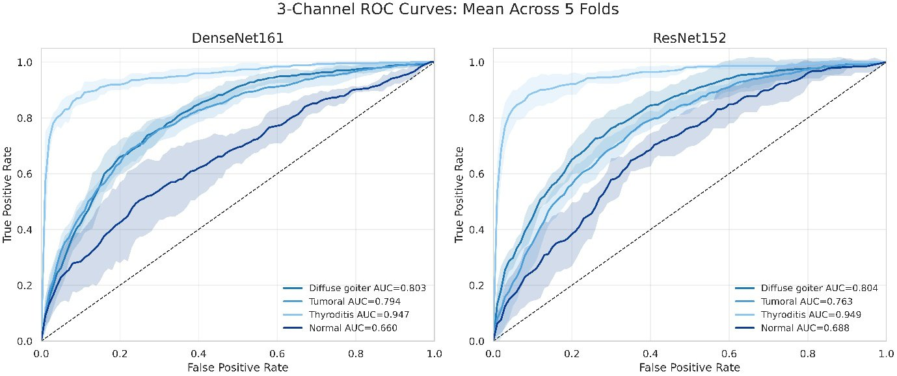
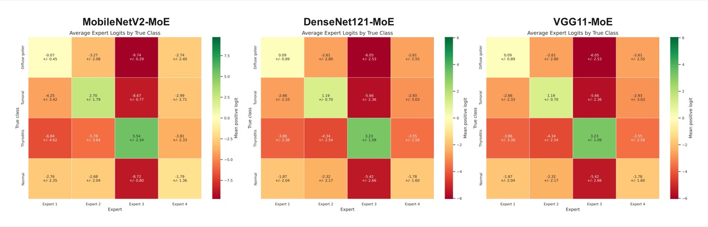
The MoE framework reached an overall accuracy of 0.585±0.042 — below both single-channel and three-channel baselines — but its per-expert logits offer a direct, class-level explanation of the model's decision process.
| Metric | Overall / Macro | Diffuse Goiter | Tumoral | Thyroiditis | Normal |
|---|---|---|---|---|---|
| Accuracy | 0.585 ± 0.042 | 0.742 ± 0.055 | 0.641 ± 0.048 | 0.933 ± 0.025 | 0.854 ± 0.041 |
| Precision | 0.542 ± 0.073 | 0.581 ± 0.093 | 0.532 ± 0.055 | 0.830 ± 0.059 | 0.225 ± 0.274 |
| Recall | 0.527 ± 0.053 | 0.494 ± 0.205 | 0.743 ± 0.135 | 0.794 ± 0.078 | 0.078 ± 0.124 |
| F1-score | 0.512 ± 0.071 | 0.513 ± 0.144 | 0.615 ± 0.042 | 0.809 ± 0.023 | 0.110 ± 0.171 |
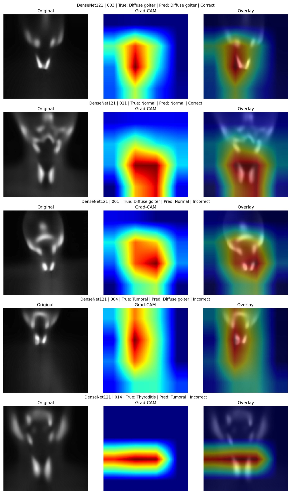
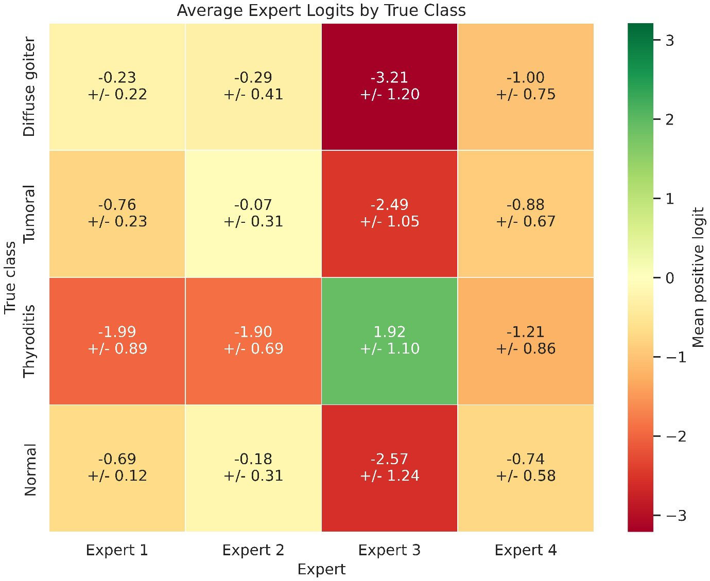
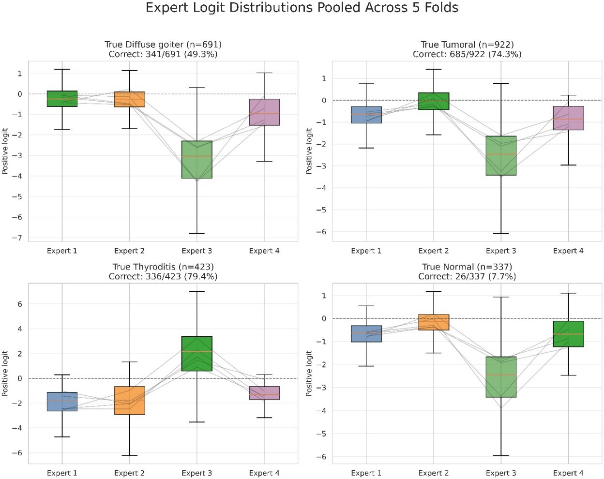
Across every framework, Grad-CAM attention concentrated on the thyroid uptake region rather than image background, indicating the networks learned physiologically relevant features. The MoE experts produced more spatially localized, class-specific attention than the single-branch baseline and three-channel models. Drag the slider below to compare a baseline DenseNet121 attention map against a class-specific MoE expert attention map on the same kind of case.
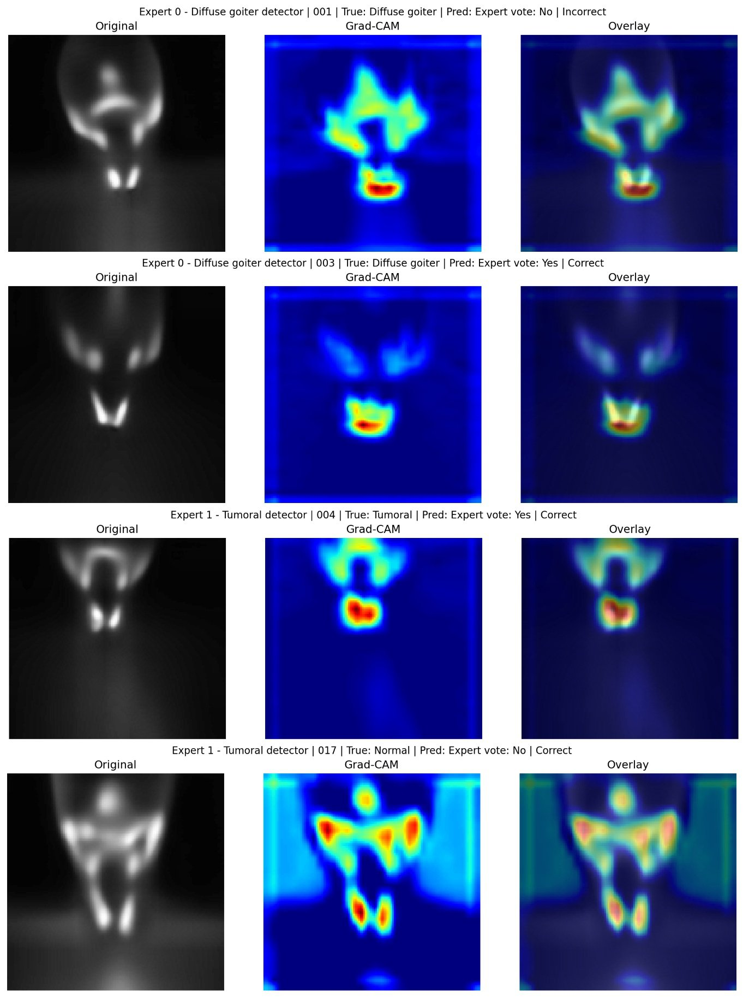
Baseline CNN (Fig. 11) MoE experts (Fig. 14)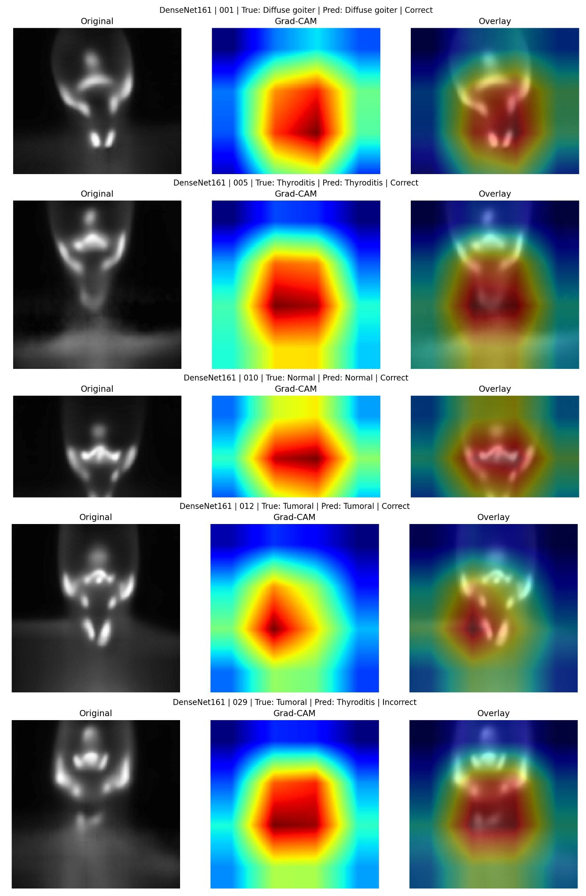
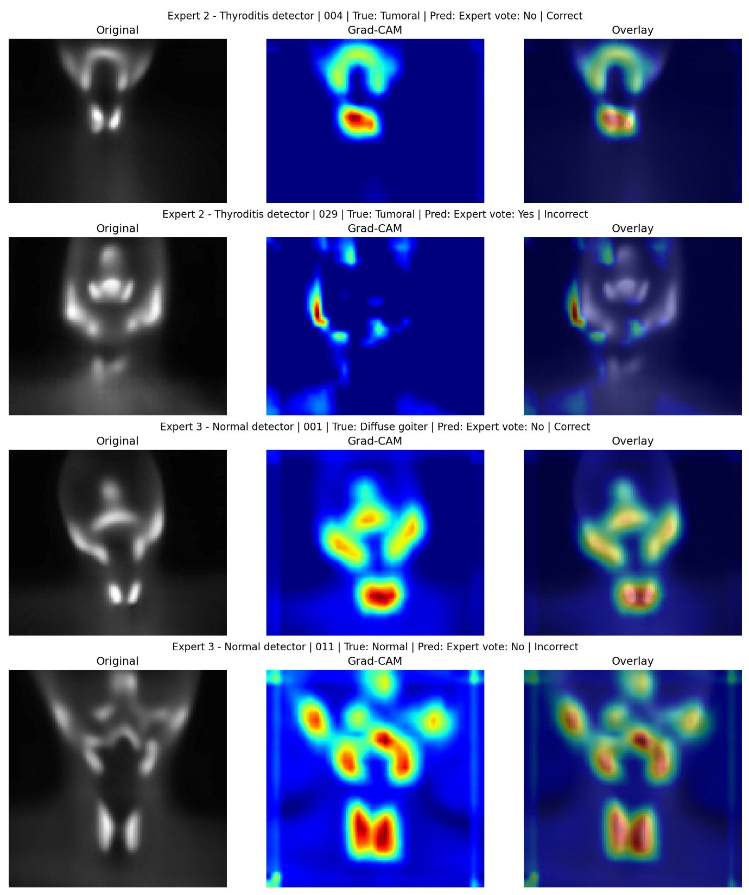
Collapsing the four-class problem to a binary tumoral vs. non-tumoral task improved discrimination for every framework, most notably for the single-channel baseline.
| Framework | Model | Accuracy | Macro Precision | Macro Recall | Macro F1 |
|---|---|---|---|---|---|
| Single-channel grayscale | DenseNet121 | 0.773 ± 0.011 | 0.771 ± 0.012 | 0.762 ± 0.017 | 0.752 ± 0.012 |
| Three-channel (grayscale + FFT + gradient) | DenseNet161 | 0.763 ± 0.009 | 0.755 ± 0.014 | 0.737 ± 0.008 | 0.743 ± 0.008 |
| Mixture-of-Experts | DenseNet161 | 0.677 ± 0.015 | 0.660 ± 0.018 | 0.636 ± 0.028 | 0.636 ± 0.030 |
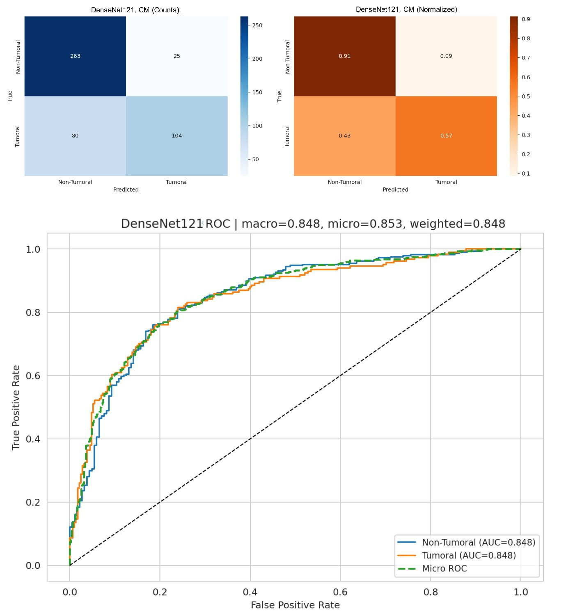
This work compared three deep learning approaches for four-class classification of thyroid scintigraphy under a difficult, unbalanced, multicenter dataset representative of real clinical conditions. DenseNet121 — the simplest, single-channel baseline — reached the highest performance; neither the added frequency/gradient channels nor the mixture-of-experts architecture improved on it. Classification performance appears driven more by dataset heterogeneity and class-specific characteristics than by network or input complexity: thyroiditis was consistently the most separable class across every framework, while the normal class — heterogeneous by construction, combining true-normal and warm-nodule cases — was consistently the hardest to recognize. Because class-specific recall varied substantially, overall accuracy alone should not be used to judge clinical usefulness; these models are best understood as decision-support tools rather than stand-alone diagnostic systems. The study serves as a realistic benchmark for multicenter thyroid scintigraphy classification and motivates further work on explainable AI and cross-center generalization in nuclear medicine.
The de-identified thyroid scintigraphy dataset analyzed in this study, together with the source code required to reproduce preprocessing, model development, training, and the principal analyses, will be made publicly available through Kaggle upon publication of the article. The release will include the scintigraphy images and diagnostic labels, the mapping between the original eight diagnostic categories and the four consolidated classes, and implementations of the baseline CNN, three-channel, and mixture-of-experts frameworks.
This retrospective multicenter study was approved by the institutional ethics committee (institution and approval ID withheld for double-blind review). All imaging data were de-identified prior to research use and public release.
@article{anonymous2026thyroidxai,
title = {Explainable Deep Learning for Multicenter [99mTc]Tc-Pertechnetate Thyroid Scintigraphy: Comparative CNN, Multi-Representation, and Mixture-of-Experts Frameworks for Four-Class Classification},
author = {Anonymous},
journal = {Preprint forthcoming},
year = {2026},
note = {Manuscript under preparation; venue to be updated upon publication}
}